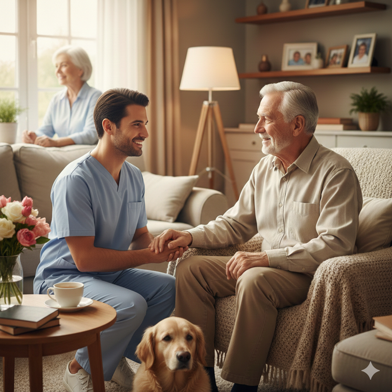

O Lar para Idosos Liberato Lopes nasceu de um propósito genuíno: oferecer cuidado humanizado, digno e integral à pessoa idosa. Sob a coordenação da enfermeira Ana Léia Araújo, a instituição é mais do que um espaço de acolhimento — é um ambiente onde cada residente é tratado com respeito, atenção individualizada e amor.
Com sólida formação técnica e ampla experiência na área da saúde, Ana Léia construiu sua trajetória baseada na excelência assistencial e na valorização da vida. Especialista em Urgência e Emergência, UTI Neonatal, Ginecologia e Obstetrícia, além de Dermatologia, Estética e cuidado de feridas, ela trouxe para o Lar uma gestão pautada em conhecimento científico, responsabilidade técnica e sensibilidade humana.
No Lar para Idosos Liberato Lopes, o cuidado vai além das necessidades básicas. Cada idoso é visto em sua totalidade — história, sentimentos, limitações e potencialidades. A equipe atua de forma integrada, promovendo:
- Assistência de enfermagem qualificada
- Acompanhamento contínuo e individualizado
- Ambiente seguro e estruturado
- Atenção à saúde física, emocional e social
- Acolhimento às famílias
A filosofia da instituição é fundamentada em valores como fidelidade, responsabilidade, perseverança e compromisso com a dignidade da pessoa idosa. Aqui, cuidar não é apenas uma função — é uma missão diária.
Inspirado pela experiência, fé e dedicação de Ana Léia, o Lar para Idosos Liberato Lopes tornou-se um espaço onde o envelhecimento é tratado com respeito e humanidade, garantindo segurança, conforto e qualidade de vida.

Ana Léia Araújo
Uma Vida Dedicada ao Cuidar Nascida em 17 de setembro de 1976, e residente em Santo Estêvão, Ana Léia Araújo construiu sua história baseada em um propósito muito claro: servir. Desde cedo entendeu que cuidar não é apenas uma profissão, mas uma missão. Técnica em Contabilidade, Técnica em Enfermagem e Enfermeira, ela buscou conhecimento constante para se tornar cada vez mais preparada para salvar vidas e aliviar dores. Especializou-se em Urgência e Emergência, UTI Neonatal, Ginecologia e Obstetrícia, além de Dermatologia e Estética, atuando também como feridóloga — sempre movida pelo desejo de oferecer um cuidado completo, humano e transformador. Sua trajetória profissional é marcada por dedicação e liderança. Atuou em hospitais, maternidades e unidades de saúde, exercendo funções que vão desde a assistência direta ao paciente até cargos de supervisão e coordenação. No Programa Melhor em Casa (SAD), no Instituto Hera de Saúde e como Coordenadora do Lar de Idosos Liberato Lopes, encontrou mais do que trabalho — encontrou propósito. Cada paciente atendido, cada família acolhida e cada idoso cuidado carrega um pouco do seu amor pela profissão. Ana Léia não enxerga apenas diagnósticos; ela enxerga pessoas, histórias e necessidades. Seu cuidado vai além da técnica — é feito com empatia, fé e compromisso. Mãe de dois filhos e avó, considera a família sua maior base e inspiração. Ser avó é um dos capítulos mais emocionantes de sua vida, pois reforça diariamente o valor do amor, da paciência e da presença. Ana Léia acredita que servir é um chamado. Seus valores são a fidelidade, a responsabilidade e a perseverança. Seu lema é claro: nunca desistir. Sua história não é apenas sobre enfermagem — é sobre vocação, força e amor ao próximo.